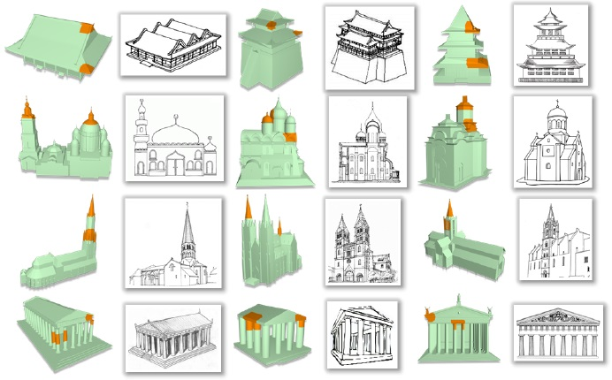

Semi-Supervised Co-Analysis of 3D Shape Styles from Projected Lines
Fenggen Yu1, Yan Zhang1,
Kai Xu2, Ali Mahdavi-Amiri3, Hao Zhang3
1Nanjing University, 2National University of Defense Technology,
3Simon Fraser University
(Fenggen and Yan are joint first authors. Kai is corresponding author.)
ACM Transactions
on Graphics (to be presented at SIGGRAPH 2018), 37(2)
Given a heterogeneous 3D shape collection (a), we perform style
co-analysis over projected feature lines (see insets) to spatially located
style patches (b) and cluster the shapes based on their styles — all the
four shapes in color belong to the same cluster. Spatial localization of style
patches enables applications such as style-preserving mesh simplification
(c-d). Note the denser triangle distributions near style patches (d).
|
Abstract
|
We present a semi-supervised co-analysis method for learning 3D shape
styles from projected feature lines, achieving style patch localization with
only weak supervision. Given a collection of 3D shapes spanning multiple
object categories and styles, we perform style co-analysis over projected
feature lines of each 3D shape and then backproject the learned style features
onto the 3D shapes. Our core analysis pipeline starts with mid-level patch
sampling and pre-selection of candidate style patches. Projective features
are then encoded via patch convolution. Multi-view feature integration and
style clustering are carried out under the framework of partially shared latent
factor (PSLF) learning, a multi-view feature learning scheme. PSLF achieves
effective multi-view feature fusion by distilling and exploiting consistent
and complementary feature information from multiple views, while also
selecting style patches from the candidates. Our style analysis approach
supports both unsupervised and semi-supervised analysis. For the latter, our
method accepts both user-specified shape labels and style-ranked triplets as
clustering constraints. We demonstrate results from 3D shape style analysis
and patch localization as well as improvements over state-of-the-art methods.
We also present several applications enabled by our style analysis.
|
|
|
Paper |
|
|
|
Slides |
|
|
|
| Images |
Our style co-analysis algorithm contains three stages: (a) Patch sampling and pre-selection and candidate style patches. (b) View feature encoding
based on patch convolution, and (c) Multi-view feature integration using partially shared latent factor (PSLF) learning. The PSLF performs unsupervised or
semi-supervised style clustering and patch filtering in an interleaving fashion.
A sample query for our user study for style patch localization. (a) Input shapes. (b) Randomly selected patches. (c) Expert-annotated style patches; (d)
Patches returned by our style analysis method.
Style-aware mesh simplification. (a) Original meshes with style
patches. (b-c) Shaded and wireframe versions of simplified models with style
preservation via constrained quadric-based decimation; red boxes highlight
significant triangle reduction near non-style areas. (d-e) Simplified models
without style preservation, via unconstrained decimation.

Some examples of recognition and spatial localization of architectural
styles on 3D building models. From the top to the bottom row: Asian,
Byzantine, Gothic and Greece. For each example, the matched 2D style
sketch is shown to the right. Style patches located on the 3D shapes are
shown in orange color.
|
|
|
| Thanks |
We thank the anonymous reviewers for their valuable comments.
This work was supported in part by NSFC (61572507, 61532003,
61622212) for Kai Xu, NSERC (611370) and a gift grant from Adobe
Research for Hao Zhang, and NSERC PDF for Ali Mahdavi-Amiri.
We are grateful to Wentao Wu for help and discussion.
|
|
|
Code
Data |
The source code and dataset can be found here.
Our work is awarded the Graphics Replicability Stamp!
We have built a website for online testing our style recognition and style patchlocalization. You are welcomed to try out our method by uploading and testing your own 3D models :)
|
|
|
| Bibtex |
@article
{yu_tog18,
title = {Semi-Supervised Co-Analysis of 3D Shape Styles from Projected Lines},
author
= {Fenggen Yu and Yan Zhang and Kai Xu and Ali Mahdavi-Amiri and Hao Zhang},
journal
= {ACM Transactions on Graphics},
volume
= {37},
number
= {2},
pages
= {to appear},
year
= {2018}
}
|
 
 
|